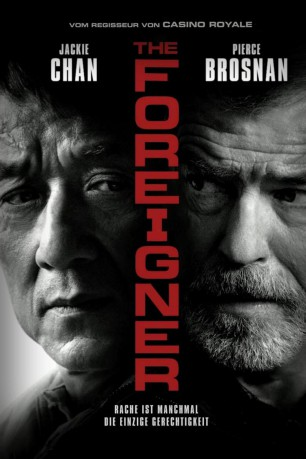

#8233 The Foreigner
 gesehen am 12.02.2018
gesehen am 12.02.2018
 
 IMDB-Wertung: 7.0 / 10
IMDB-Wertung: 7.0 / 10  Metascore: 55
Metascore: 55 
Der demütige Restaurantbesitzer Quan (Jackie Chan) hat in seiner Vergangenheit schon unendliches Leid ertragen müssen und hoffte in London alles hinter sich gelassen zu haben. Mit seiner Tochter Fan (Katie Leung) führt er ein glückliches Leben … bis diese bei einem Bombenattentat irischer Terroristen ums Leben kommt. Weil die Polizei auch nach Wochen noch keine Ermittlungsergebnisse präsentieren kann, macht er sich selbst auf die Suche nach Antworten und stößt dabei auf den irischen Politiker Liam Hennessy (Pierce Brosnan). Der hat dem Terror zwar öffentlich abgeschworen, doch Quan ist überzeugt, dass Hennessy die Namen der Täter kennt. Deswegen nimmt er ihn ins Visier, bedroht ihn selbst mit einer Bombe, um an die Namen der Täter zu kommen. Weil er nun selbst in Gefahr schwebt, schlägt Hennessy zurück. Es kommt zum erbitterten Duell der beiden Männer...
Jahr: 2017
Dauer: 113 Minuten
FSK: 16
Land: England Studio: UFATonspuren: DTS - ,
Untertitel: Deutsch, Englisch,
Auflösung: 1080p (1920x800) Größe: 7424 MB
Genre: Action, Thriller, Drama, Krimi, Mystery
Regisseur:  Martin Campbell
Martin Campbell
Drehbuch: David Marconi
Soundtrack: Cliff Martinez
Darsteller:
 Katie Leung als Fan
Katie Leung als Fan Jackie Chan als Quan Ngoc Minh
Jackie Chan als Quan Ngoc Minh- Rufus Jones als Ian Wood
 Mark Tandy als Simpson
Mark Tandy als Simpson- Caolan Byrne als McCormick
- Niall McNamee als Patrick O'Reilly
 Pierce Brosnan als Liam Hennessy
Pierce Brosnan als Liam Hennessy Charlie Murphy als Maggie / Sara McKay
Charlie Murphy als Maggie / Sara McKay- Orla Brady als Mary Hennessy
- Lia Williams als Katherine Davies
 Michael McElhatton als Jim Kavanagh
Michael McElhatton als Jim Kavanagh- David Pearse als Billy McMahon
- Pippa Bennett-Warner als Marissa Levett
- Tao Liu als Lam
 Dermot Crowley als Hugh McGrath
Dermot Crowley als Hugh McGrath- Sean Campion als Byard Cary
 Ray Fearon als Commander Richard Bromley
Ray Fearon als Commander Richard Bromley- Thusitha Jayasundera als Mira
- Ryan Early als Scotland Yard Receptionist
 Stephen Hogan als Christy Murphy
Stephen Hogan als Christy Murphy Stuart Graham als Inspector Donal Greig
Stuart Graham als Inspector Donal Greig- Rory Fleck Byrne als Sean Morrison
 David Annen als Prime Minister
David Annen als Prime Minister- Simon Lenagan als Electrician
- Aden Gillett als Ross
 Charlie Bewley als Joker
Charlie Bewley als Joker- Roberta Taylor als Mrs. Taylor
 Simon Kunz als Matthew Rice
Simon Kunz als Matthew Rice Ilan Goodman als Landesman
Ilan Goodman als Landesman Roy Beck als IRA Hit Man (uncredited)
Roy Beck als IRA Hit Man (uncredited) Dilyana Bouklieva als Paramedic (uncredited)
Dilyana Bouklieva als Paramedic (uncredited) Bern Collaço als MI5 Agent (uncredited)
Bern Collaço als MI5 Agent (uncredited) Tom Dab als Passerby (uncredited)
Tom Dab als Passerby (uncredited)- Begona F. Martin als Airport Passenger (uncredited)
 Dino Fazzani als Firefighter (uncredited)
Dino Fazzani als Firefighter (uncredited) Lee Nicholas Harris als Police Officer (uncredited)
Lee Nicholas Harris als Police Officer (uncredited)- Jaey Howe als IRA Gang Leader (uncredited)
 Jorge Leon Martinez als Forensic Officer (uncredited)
Jorge Leon Martinez als Forensic Officer (uncredited) Marian Lorencik als Takeaway Passerby (uncredited)
Marian Lorencik als Takeaway Passerby (uncredited)- Adrian McGaw als Jacko (uncredited)
- Paul A Munday als Construction Worker (uncredited)
 Shina Shihoko Nagai als Journalist (uncredited)
Shina Shihoko Nagai als Journalist (uncredited)- James O'Donnell als Sniper 3 (uncredited)
- Matt Rentell als Police Officer (uncredited)
- Darren Tassell als Pub Customer (uncredited)
- Joe Watts als Lout (uncredited)
 Glenn Webster als Police Officer / SO19 (uncredited)
Glenn Webster als Police Officer / SO19 (uncredited)- John Cronin als Denis Fisher
- Donna Bernard als Channel A News Anchor
- Aaron Monaghan als Pat Nugent
Datei: X:\HD-Eastern-Collections\Jackie Chan\Foreigner, The (2017, FSK16, 1920x800).mkv seit 11.02.2018
Festplatte: HD Eastern+Western
 Es gibt insgesamt 58 Filme in der Gruppe 'HD-Eastern-Collections\Jackie Chan'
Es gibt insgesamt 58 Filme in der Gruppe 'HD-Eastern-Collections\Jackie Chan'